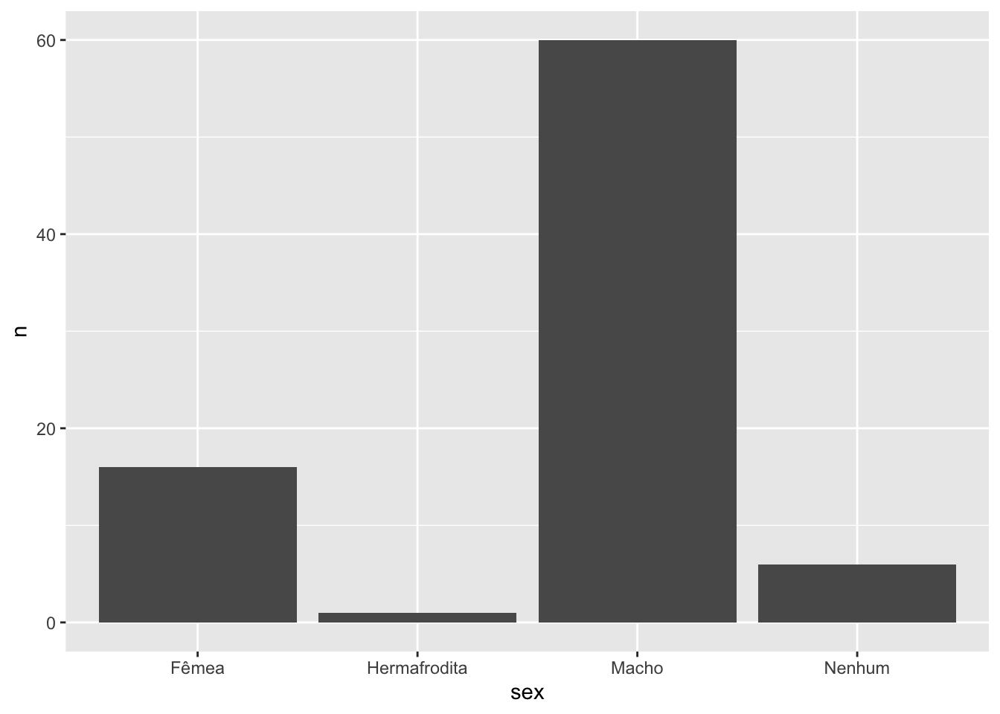
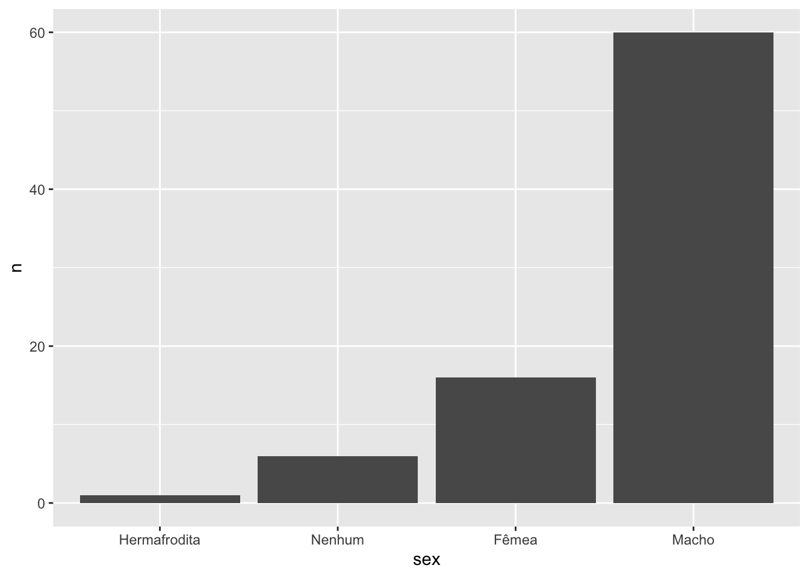
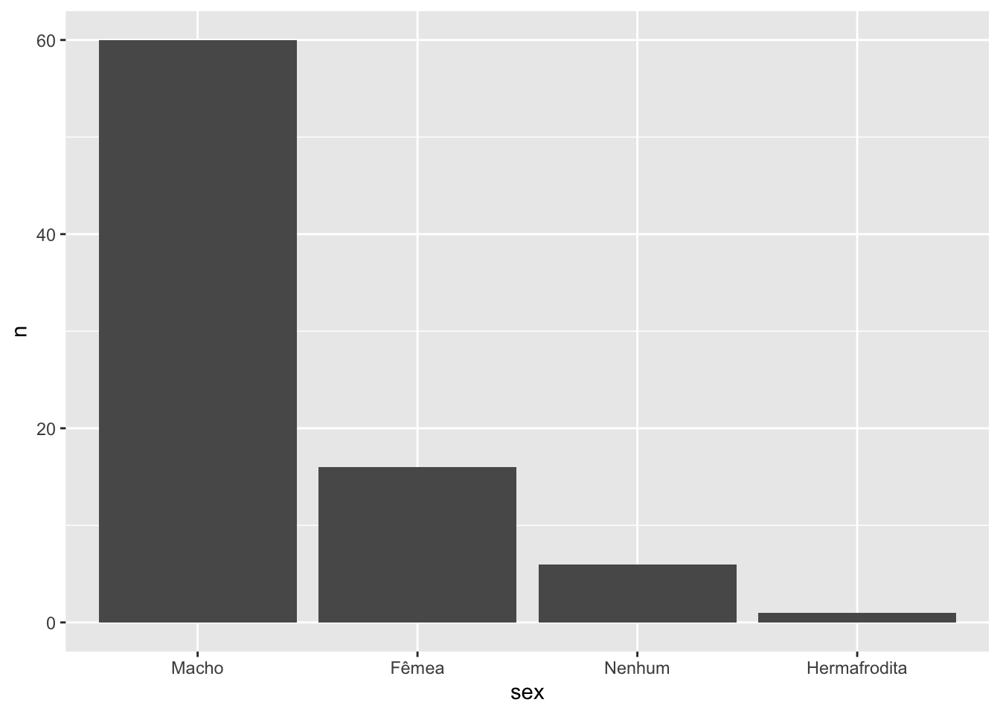
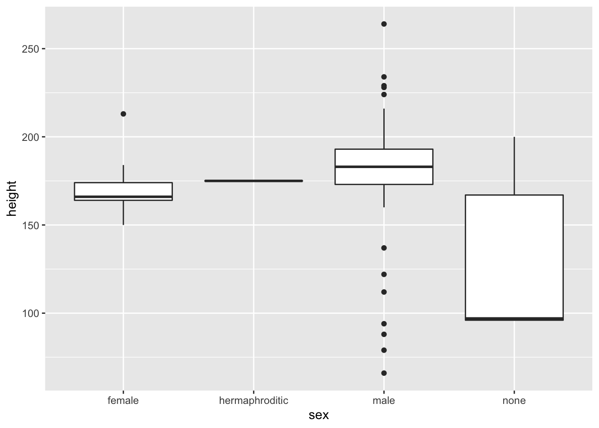
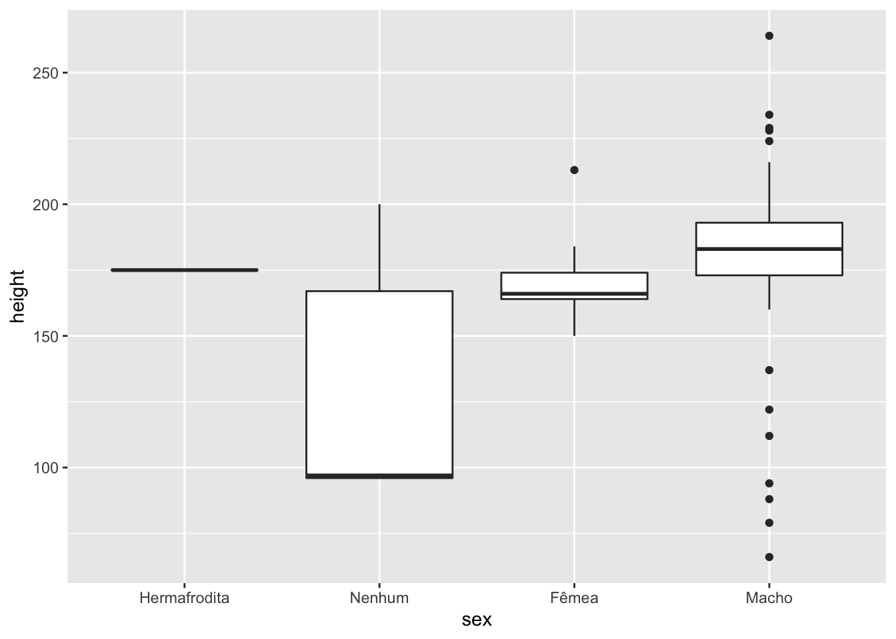
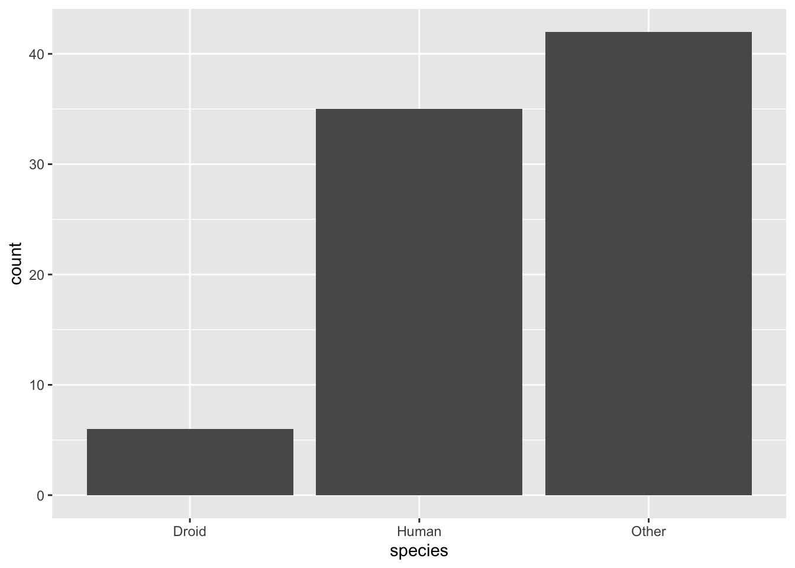

7.6 O pacote forcats
Se você utiliza R antes do surgimento do tidyverse, provavelmente já escreveu a expressão stringsAsFactors = F quando importava dados usando as funções read.csv ou read.table. É muito frustrante quando uma coluna de strings é lida como um fator, pois fatores não podem ser manipulados do mesmo jeito que manipulamos vetores de strings.
Felizmente, depois de aprender a usar o readr você não terá mais esse problema, pois as funções do pacote não lê colunas de caracteres como fatores por padrão. Mas isso não significa que fatores são inúteis. Eles representam uma forma muito prática de lidar com variáveis categorizadas, tanto para fins de modelagem quanto para fins de visualização.
Grande parte da frustração associada ao uso de fatores no R existe por conta da falta de algumas ferramentas úteis no pacote base. Para resolver esse o problema, Hadley Wickham ajudou a comunidade R (de novo) desenvolvendo o pacote forcats(for categorial variables), que implementa algumas dessas ferramentas.
As principais funções do forcats servem para alterar a ordem e modificar os níveis de um fator. Para exemplificar a utilidade dessas funções, nesta seção vamos utilizá-las em situações corriqueiras.
Se você não tem o pacote {forcats}, instalado rode o código abaixo antes de utilizá-lo:
install.packages("forcats")Nos exemplos a seguir, utilizarmos os seguintes pacotes:
library(forcats)
library(ggplot2)
library(dplyr)7.6.1 O que são fatores?
Como vimos na Seção 3.13.2, fatores são uma classe de objetos no R criada para representar as variáveis categóricas numericamente.
Eles são necessários pois muitas vezes precisamos representar variáveis categóricas como números. Quando estamos fazendo um gráfico, por exemplo, só podemos mapear variáveis numéricas em seus eixos, pois o plano cartesiano é formado por duas retas de números reais.
O que fazemos então quando plotamos uma variável categórica? Nós a transformamos em fatores.
Mas como a manipulação de fatores é diferente da manipulação de números e strings (graças aos famosos levels), tarefas que parecem simples, como ordenar as barras de um gráfico de barras, acabam se tornando grandes desafios quando não sabemos lidar com essa classe de valores.
Nos exemplos a seguir, vamos utilizar a base starwars (do pacote {dplyr}) para aprendermos a fazer as principais operações com fatores utilizando o pacote {forcats}.
7.6.2 Modificando níveis de um fator
Vamos trabalhar primeiro com a coluna sex, que diz qual é o sexo de cada personagem. As possibilidades são:
starwars %>%
pull(sex) %>%
unique()
## [1] "male" "none" "female" "hermaphroditic"
## [5] NAVeja que se transformarmos a coluna em fator, esses serão os levels da variável, não importa se o sub-conjunto que estivermos observando possua ou não todas as categorias.
starwars %>%
mutate(sex = as.factor(sex)) %>%
pull(sex) %>%
head()
## [1] male none none male female male
## Levels: female hermaphroditic male noneVamos criar um objeto com os 16 primeiros valores da coluna sex já transformados em fator.
fator_sex <- starwars %>%
pull(sex) %>%
as.factor() %>%
head(16)
fator_sex
## [1] male none none male female
## [6] male female none male male
## [11] male male male male male
## [16] hermaphroditic
## Levels: female hermaphroditic male nonePara mudar os níveis de um fator, podemos utilizar a função lvls_revalue(). Veja que, ao mudarmos os níveis de um fator, o label de cada valor também muda. Os novos valores precisam ser passados conforme a ordem dos níveis antigos.
lvls_revalue(
fator_sex,
new_levels = c("Fêmea", "Hermafrodita", "Macho", "Nenhum")
)
## [1] Macho Nenhum Nenhum Macho Fêmea
## [6] Macho Fêmea Nenhum Macho Macho
## [11] Macho Macho Macho Macho Macho
## [16] Hermafrodita
## Levels: Fêmea Hermafrodita Macho NenhumEssa função é uma boa alternativa para mudar o nome das categorias de uma variável antes de construir um gráfico.
starwars %>%
filter(!is.na(sex)) %>%
count(sex) %>%
mutate(
sex = lvls_revalue(sex, c("Fêmea", "Hermafrodita", "Macho", "Nenhum"))
) %>%
ggplot() +
geom_col(aes(x = sex, y = n)) 
Como as colunas no gráfico respeitam a ordem dos níveis do fator, não importa a ordem que as linhas aparecem na tabela, o gráfico sempre será gerado com as colunas na mesma ordem. Assim, se quiséssemos alterar a ordem das barras do gráfico anterior, precisamos mudar a ordem dos níveis do fator sex.
7.6.3 Mudando a ordem dos níveis de um fator
Para mudar a ordem dos níveis de um fator, podemos utilizar a função lvls_reorder(). Basta passarmos qual a nova ordem dos fatores, com relação à ordem anterior. No exemplo abaixo definimos que, na nova ordem,
a primeira posição terá o nível que estava na terceira posição na ordem antiga;
a segunda posição terá o nível que estava na primeira posição na ordem antiga;
a terceira posição terá o nível que estava na quarta posição na ordem antiga;
a quarta posição terá o nível que estava na segunda posição na ordem antiga.
lvls_reorder(fator_sex, c(3, 1, 4, 2))
## [1] male none none male female
## [6] male female none male male
## [11] male male male male male
## [16] hermaphroditic
## Levels: male female none hermaphroditicAssim, poderíamos usar essa nova ordem para ordenar as colunas do nosso gráfico.
starwars %>%
filter(!is.na(sex)) %>%
count(sex) %>%
mutate(
sex = lvls_revalue(sex, c("Fêmea", "Hermafrodita", "Macho", "Nenhum")),
sex = lvls_reorder(sex, c(3, 1, 4, 2))
) %>%
ggplot() +
geom_col(aes(x = sex, y = n)) 
Repare que precisamos passar a nova ordem na mão, o que pode deixar de funcionar se a nossa base mudar (recebemos mais linhas ou fizermos um filtro anteriormente).
Anterior ao mutate() temos a seguinte tabela:
starwars %>%
filter(!is.na(sex)) %>%
count(sex)
## # A tibble: 4 x 2
## sex n
## <chr> <int>
## 1 female 16
## 2 hermaphroditic 1
## 3 male 60
## 4 none 6O que queremos é que os níveis da coluna sex sejam ordenados segundo os valores da coluna n, isto é, quem tiver o maior valor de n deve ser o primeiro nível, o segundo maior valor de n seja o segundo nível e assim por diante.
Podemos melhorar esse código utilizando a função fct_reorder(). Com ela, em vez de definirmos na mão a ordem dos níveis do fator, podemos ordená-lo segundo valores de uma segunda variável.
starwars %>%
filter(!is.na(sex)) %>%
count(sex) %>%
mutate(
sex = lvls_revalue(sex, c("Fêmea", "Hermafrodita", "Macho", "Nenhum")),
sex = fct_reorder(sex, n)
) %>%
ggplot() +
geom_col(aes(x = sex, y = n)) 
É quase o que queríamos! O problema é que os níveis estão sendo ordenados de forma crescente e gostaríamos de ordenar na ordem decrescente. Para isso, basta utilizarmos o parâmetro .desc.
starwars %>%
filter(!is.na(sex)) %>%
count(sex) %>%
mutate(
sex = lvls_revalue(sex, c("Fêmea", "Hermafrodita", "Macho", "Nenhum")),
sex = fct_reorder(sex, n, .desc = TRUE)
) %>%
ggplot() +
geom_col(aes(x = sex, y = n)) 
Agora sim! Com esse código, as colunas estarão sendo ordenadas pela frequência, independentemente dos valores de n e sex que chegarem no mutate().
Se olharmos a documentação da função fct_reorder() vamos descobrir que esse exemplo é apenas um caso particular de como podemos utilizá-la. No contexto geral, ela ordena os níveis de um fator segundo uma função dos valores de uma segunda variável.
Se em vez de construirmos um gráfico de barras da frequência da variável sex, construíssemos boxplots da altura para cada sexo diferente, teríamos o gráfico a seguir.
starwars %>%
filter(!is.na(sex)) %>%
ggplot() +
geom_boxplot(aes(x = sex, y = height))
## Warning: Removed 5 rows containing non-finite values (stat_boxplot).
Se quiséssemos ordenar cada boxplot (pela mediana, por exemplo), continuamos podendo usar a função fct_reorder(). Veja que ela possui o argumento .fun, que indica qual função será utilizada na variável secundária para determinar a ordem dos níveis.
No exemplo abaixo, utilizamos .fun = median, o que significa que, para cada nível da variável sex, vamos calcular a mediana da variável height e ordenaremos os níveis de sex conforme a ordem dessas medianas. Assim, o primeiro nível será o sexo com menor altura mediana, o segundo nível será o sexo com a segunda menor algura media e assim por diante. Se quiséssemos ordenar de forma decrescente, bastaria utilizar o argumento .desc = TRUE.
starwars %>%
filter(!is.na(sex)) %>%
mutate(
sex = lvls_revalue(sex, c("Fêmea", "Hermafrodita", "Macho", "Nenhum")),
sex = fct_reorder(sex, height, .fun = median, na.rm = TRUE)
) %>%
ggplot() +
geom_boxplot(aes(x = sex, y = height))
## Warning: Removed 5 rows containing non-finite values (stat_boxplot). Também poderíamos ordenar pelo máximo, utilizando
Também poderíamos ordenar pelo máximo, utilizando .fun = max. Neste argumento, podemos usar qualquer função sumarizadora: min(), mean(), median(), max(), sd(), var() etc.
starwars %>%
filter(!is.na(sex)) %>%
mutate(
sex = lvls_revalue(sex, c("Fêmea", "Hermafrodita", "Macho", "Nenhum")),
sex = fct_reorder(sex, height, .fun = max, na.rm = TRUE)
) %>%
ggplot() +
geom_boxplot(aes(x = sex, y = height))
## Warning: Removed 5 rows containing non-finite values (stat_boxplot).
7.6.4 Colapsando níveis de um fator
Imagine que quermos fazer um gráfico de barras com a frequência de personagens por espécie.
starwars %>%
ggplot(aes(x = species)) +
geom_bar()
O gráfico resultante é horrível, pois temos muitas espécies diferentes. Uma solução seria agrupar as espécies menos frequentes, criando uma nova categoria (outras, por exemplo).
Para isso, podemos usar a função fct_lump(). Vamos fazer isso primeiro com o vetor de espécies.
fator_especies <- as.factor(starwars$species)
fator_especies
## [1] Human Droid Droid Human Human
## [6] Human Human Droid Human Human
## [11] Human Human Wookiee Human Rodian
## [16] Hutt Human Human Yoda's species Human
## [21] Human Droid Trandoshan Human Human
## [26] Mon Calamari Human Human Ewok Sullustan
## [31] Human Neimodian Human Gungan Gungan
## [36] Gungan <NA> Toydarian Dug <NA>
## [41] Human Zabrak Twi'lek Twi'lek Vulptereen
## [46] Xexto Toong Human Cerean Nautolan
## [51] Zabrak Tholothian Iktotchi Quermian Kel Dor
## [56] Chagrian Human Human Human Geonosian
## [61] Mirialan Mirialan Human Human Human
## [66] Human Clawdite Besalisk Kaminoan Kaminoan
## [71] Human Aleena Droid Skakoan Muun
## [76] Togruta Kaleesh Wookiee Human <NA>
## [81] Pau'an Human Human Human Droid
## [86] <NA> Human
## 37 Levels: Aleena Besalisk Cerean Chagrian Clawdite Droid Dug ... ZabrakTemos 37 espécies diferentes na base. Podemos deixar apenas as 3 mais frequentes da seguinte forma:
fct_lump(fator_especies, n = 3)
## [1] Human Droid Droid Human Human Human Human Droid Human Human
## [11] Human Human Other Human Other Other Human Human Other Human
## [21] Human Droid Other Human Human Other Human Human Other Other
## [31] Human Other Human Gungan Gungan Gungan <NA> Other Other <NA>
## [41] Human Other Other Other Other Other Other Human Other Other
## [51] Other Other Other Other Other Other Human Human Human Other
## [61] Other Other Human Human Human Human Other Other Other Other
## [71] Human Other Droid Other Other Other Other Other Human <NA>
## [81] Other Human Human Human Droid <NA> Human
## Levels: Droid Gungan Human OtherO fator resultante possui 4 níveis: Droid, Gungan, Human e Other. Os 3 primeiros níveis são os mais frequentes, enquanto o nível Other foi atribuído a todos os outros 34 níveis que existiam anteiormente.
Poderíamos definir o nome do nível Others usando o argumento other_level.
fct_lump(fator_especies, n = 3, other_level = "Outras espécies")
## [1] Human Droid Droid Human
## [5] Human Human Human Droid
## [9] Human Human Human Human
## [13] Outras espécies Human Outras espécies Outras espécies
## [17] Human Human Outras espécies Human
## [21] Human Droid Outras espécies Human
## [25] Human Outras espécies Human Human
## [29] Outras espécies Outras espécies Human Outras espécies
## [33] Human Gungan Gungan Gungan
## [37] <NA> Outras espécies Outras espécies <NA>
## [41] Human Outras espécies Outras espécies Outras espécies
## [45] Outras espécies Outras espécies Outras espécies Human
## [49] Outras espécies Outras espécies Outras espécies Outras espécies
## [53] Outras espécies Outras espécies Outras espécies Outras espécies
## [57] Human Human Human Outras espécies
## [61] Outras espécies Outras espécies Human Human
## [65] Human Human Outras espécies Outras espécies
## [69] Outras espécies Outras espécies Human Outras espécies
## [73] Droid Outras espécies Outras espécies Outras espécies
## [77] Outras espécies Outras espécies Human <NA>
## [81] Outras espécies Human Human Human
## [85] Droid <NA> Human
## Levels: Droid Gungan Human Outras espéciesTambém podemos transformar em Outras os níveis cuja frequência relativa é menor que um determinado limite, por exemplo, 2%. No exemplo abaixo, apenas espécies que representam mais de 2% dos personagem na base são mantidas. As demais foram transformadas em Outras.
fct_lump(fator_especies, p = 0.02, other_level = "Outras")
## [1] Human Droid Droid Human Human Human Human Droid
## [9] Human Human Human Human Wookiee Human Outras Outras
## [17] Human Human Outras Human Human Droid Outras Human
## [25] Human Outras Human Human Outras Outras Human Outras
## [33] Human Gungan Gungan Gungan <NA> Outras Outras <NA>
## [41] Human Zabrak Twi'lek Twi'lek Outras Outras Outras Human
## [49] Outras Outras Zabrak Outras Outras Outras Outras Outras
## [57] Human Human Human Outras Mirialan Mirialan Human Human
## [65] Human Human Outras Outras Kaminoan Kaminoan Human Outras
## [73] Droid Outras Outras Outras Outras Wookiee Human <NA>
## [81] Outras Human Human Human Droid <NA> Human
## 9 Levels: Droid Gungan Human Kaminoan Mirialan Twi'lek Wookiee ... OutrasCom isso, já conseguimos fazer um gráfico de barras mais agradável.
starwars %>%
filter(!is.na(species)) %>%
mutate(species = fct_lump(species, n = 2)) %>%
ggplot(aes(x = species)) +
geom_bar()
starwars %>%
filter(!is.na(species)) %>%
mutate(
species = fct_lump(species, p = 0.02),
species = fct_infreq(species) # Ordena pela frequência de cada nível
) %>%
ggplot(aes(x = species)) +
geom_bar()
Também é possível colapsar níveis criando manualmente os grupos. Para isso, utilizamos a função fct_collapse(). No exemplo a seguir, reclassificamos os níveis da variável eye_color. Os níveis não listados são reclassificados como "outros".
fator_cor_olhos <- as.factor(starwars$eye_color)
fct_collapse(
fator_cor_olhos,
preto = "black",
castanho = c("brown", "hazel"),
azul_verde = c("blue", "green"),
exotico = c("pink", "red", "white"),
colorido = c("red, blue", "green, yellow"),
other_level = "outros"
)
## Warning: Unknown levels in `f`: green
## [1] azul_verde outros exotico outros castanho azul_verde
## [7] azul_verde exotico castanho outros azul_verde azul_verde
## [13] azul_verde castanho preto outros castanho azul_verde
## [19] castanho outros castanho exotico exotico castanho
## [25] azul_verde outros azul_verde castanho castanho preto
## [31] azul_verde exotico azul_verde outros outros outros
## [37] azul_verde outros outros castanho castanho outros
## [43] exotico castanho outros preto outros castanho
## [49] outros preto castanho azul_verde outros outros
## [55] preto azul_verde castanho castanho azul_verde outros
## [61] azul_verde azul_verde castanho castanho castanho castanho
## [67] outros outros preto preto azul_verde outros
## [73] colorido outros outros preto colorido azul_verde
## [79] castanho exotico preto outros castanho castanho
## [85] preto outros castanho
## Levels: preto azul_verde castanho colorido exotico outros7.6.5 Outras funções úteis
A seguir, listamos outras funções úteis do pacote {forcats}, apresentando exemplos simples de como usá-las.
fator <- factor(c("a", "b", "a", "c", "c", "a"))
fator
## [1] a b a c c a
## Levels: a b cfct_c()
Junta dois fatores (e seus níveis).
fator2 <- factor(c("d", "e"))
fct_c(fator, fator2)
## [1] a b a c c a d e
## Levels: a b c d efct_count()
Devolve a frequência dos níveis de um vetor.
fct_count(fator)
## # A tibble: 3 x 2
## f n
## <fct> <int>
## 1 a 3
## 2 b 1
## 3 c 2fct_expand()
Acrescenta níveis a um fator
fct_expand(fator, c("d", "e"))
## [1] a b a c c a
## Levels: a b c d efct_rev()
Inverte os níveis de um fator.
fct_rev(fator)
## [1] a b a c c a
## Levels: c b a